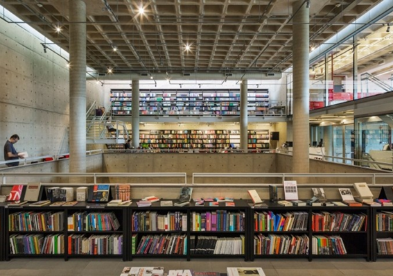

INSTITUTO BUTANTÃ


Esse instituto foi oficialmente inaugurado em 1901, com o objetivo de combater a peste bubônica, que por volta de 1898 causava uma epidemia em Santos, litoral paulista. Para produzir o soro contra a peste, foi escolhida uma área fora do perímetro urbano da cidade de São Paulo, instalando um laboratório junto ao Instituto Bacteriológico, que dois anos mais tarde, recebeu o nome de Instituto Serumteraphico, passando a atuar na área de pesquisa e produção de soros contra venenos de cobra, por exemplo. Em 2010, o Instituto Butantã sofreu um trágico incêndio e perdeu metade da sua coleção de répteis e aracnídeos, contudo, hoje é um dos centros mais importantes e renomados do mundo, se tornando um importante ponto turístico. Atualmente, lá é possível encontrar um serpentário, um museu, uma casa antiga que funciona como sede laboral e um parque que possui mais de 80 hectares.
VILA BUTANTÃ


Para quem prefere passeios gastronômicos, uma boa opção é a Vila Butantã, um local agradável que reúne diversos food trucks, restaurantes, bares e lojas, próximo ao Metrô Butantã. Algumas opções são a Adega Santiago, o DueCuoch e o Brás.
O BAIRRO DOS MUSEUS
Por outro lado, quem gosta mais de passeios históricos, o Butantã é o lugar certo. Conhecido como “O Bairro dos Museus” ele abriga mais de 10, e alguns exemplos são:
1. Museu da Arqueologia e Etnologia
2. Museu Oceanográfico
3. Museu Biológico
4. Museu da Cidade de São Paulo
5. Museu da Polícia Civil
CIDADE UNIVERSITÁRIA


Mas não podemos esquecer de falar de uma das construções que gerou uma das maiores mudanças no bairro do Butantã: O surgimento da USP. Fundada em 25 de janeiro de 1934, quando a capital estava completando 380 anos, não foi a primeira universidade brasileira mas foi a pio era a reunir as instituições que já existiram antes e centralizá-las numa faculdade de ciências, filosofia e letras.
BIBLIOTECA BRASILIANA
- 
A Biblioteca Brasiliana tem um acervo expressivo com mais de 60 mil volumes de livros e manuscritos, com obras de literatura, história, periódicos, livros didáticos e científicos, mapas e relatos de viajantes, sendo centro de pesquisa e difusão científica de estudos brasileiros, da ti e das humanidades digitais.
PARQUES NO BUTANTÃ


Por último, dois locais de áreas verdes muito importantes do Butantã são o Parque Vila Lobos, que tem diversas atrações como playground, pista de Cooper, campo de futebol, quadras poliesportiva, caminhos de terra, trilhas de caminhada, quiosques, churrasqueiras. E o Parque Previdência com atrações como mesa de piquenique, pista para caminhada, aparelho de ginástica, playground, trilha e jardim aromático.